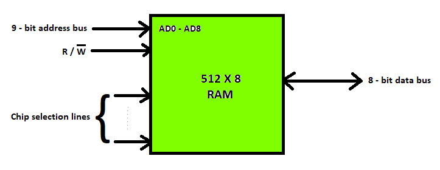
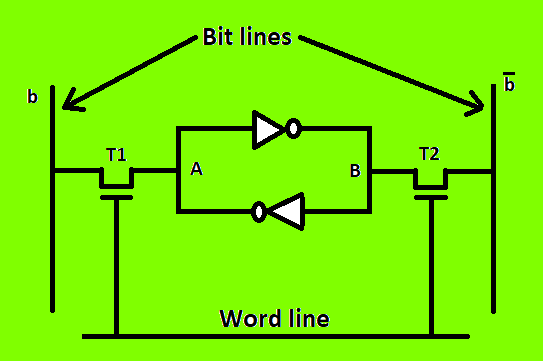
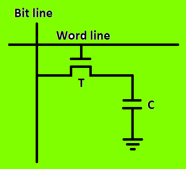
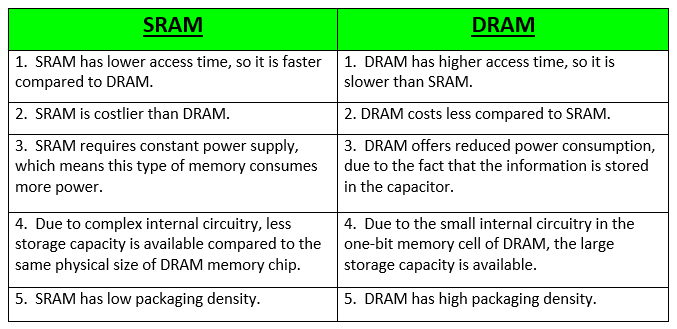

RAM(Random Access Memory) is a part of computer’s Main Memory which is directly accessible by CPU. RAM is used to Read and Write data into it which is accessed by CPU randomly. RAM is volatile in nature, it means if the power goes off, the stored information is lost. RAM is used to store the data that is currently processed by the CPU. Most of the programs and data that are modifiable are stored in RAM.
Integrated RAM chips are available in two form:
- SRAM(Static RAM)
- DRAM(Dynamic RAM)
The block diagram of RAM chip is given below.

SRAM
The SRAM memories consist of circuits capable of retaining the stored information as long as the power is applied. That means this type of memory requires constant power. SRAM memories are used to build Cache Memory.
SRAM Memory Cell: Static memories(SRAM) are memories that consist of circuits capable of retaining their state as long as power is on. Thus this type of memories is called volatile memories. The below figure shows a cell diagram of SRAM. A latch is formed by two inverters connected as shown in the figure. Two transistors T1 and T2 are used for connecting the latch with two bit lines. The purpose of these transistors is to act as switches that can be opened or closed under the control of the word line, which is controlled by the address decoder. When the word line is at 0-level, the transistors are turned off and the latch remains its information. For example, the cell is at state 1 if the logic value at point A is 1 and at point B is 0. This state is retained as long as the word line is not activated.

For Read operation, the word line is activated by the address input to the address decoder. The activated word line closes both the transistors (switches) T1 and T2. Then the bit values at points A and B can transmit to their respective bit lines. The sense/write circuit at the end of the bit lines sends the output to the processor.
For Write operation, the address provided to the decoder activates the word line to close both the switches. Then the bit value that to be written into the cell is provided through the sense/write circuit and the signals in bit lines are then stored in the cell.
DRAM
DRAM stores the binary information in the form of electric charges that applied to capacitors. The stored information on the capacitors tend to lose over a period of time and thus the capacitors must be periodically recharged to retain their usage. The main memory is generally made up of DRAM chips.
DRAM Memory Cell: Though SRAM is very fast, but it is expensive because of its every cell requires several transistors. Relatively less expensive RAM is DRAM, due to the use of one transistor and one capacitor in each cell, as shown in the below figure., where C is the capacitor and T is the transistor. Information is stored in a DRAM cell in the form of a charge on a capacitor and this charge needs to be periodically recharged.
For storing information in this cell, transistor T is turned on and an appropriate voltage is applied to the bit line. This causes a known amount of charge to be stored in the capacitor. After the transistor is turned off, due to the property of the capacitor, it starts to discharge. Hence, the information stored in the cell can be read correctly only if it is read before the charge on the capacitors drops below some threshold value.

Types of DRAM
There are mainly 5 types of DRAM:
- Asynchronous DRAM (ADRAM): The DRAM described above is the asynchronous type DRAM. The timing of the memory device is controlled asynchronously. A specialized memory controller circuit generates the necessary control signals to control the timing. The CPU must take into account the delay in the response of the memory.
- Synchronous DRAM (SDRAM): These RAM chips’ access speed is directly synchronized with the CPU’s clock. For this, the memory chips remain ready for operation when the CPU expects them to be ready. These memories operate at the CPU-memory bus without imposing wait states. SDRAM is commercially available as modules incorporating multiple SDRAM chips and forming the required capacity for the modules.
- Double-Data-Rate SDRAM (DDR SDRAM): This faster version of SDRAM performs its operations on both edges of the clock signal; whereas a standard SDRAM performs its operations on the rising edge of the clock signal. Since they transfer data on both edges of the clock, the data transfer rate is doubled. To access the data at high rate, the memory cells are organized into two groups. Each group is accessed separately.
- Rambus DRAM (RDRAM): The RDRAM provides a very high data transfer rate over a narrow CPU-memory bus. It uses various speedup mechanisms, like synchronous memory interface, caching inside the DRAM chips and very fast signal timing. The Rambus data bus width is 8 or 9 bits.
- Cache DRAM (CDRAM): This memory is a special type DRAM memory with an on-chip cache memory (SRAM) that acts as a high-speed buffer for the main DRAM.
Difference between SRAM and DRAM
Below table lists some of the differences between SRAM and DRAM:
